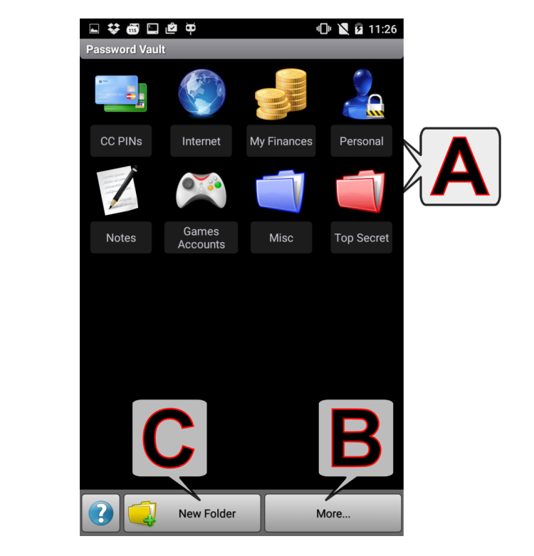

密碼保險箱
（輕觸某個字母或向下捲動，即可檢視更多主題）

A - 密碼資料夾
- 點按資料夾：開啟密碼項目清單：

- 點按項目：顯示/隱藏 密碼
- 長按項目：顯示/編輯 參數（標題、密碼、註釋和色彩）；刪除/移動 項目
- 圖示的含義：
- 複製到剪貼簿
 - 複製到剪貼簿（所有/選中段落 - 段落指以「硬歸位」分隔的文字行）
- 複製到剪貼簿（所有/選中段落 - 段落指以「硬歸位」分隔的文字行）
 - 密碼生成器
- 密碼生成器
- 長按資料夾：顯示/編輯/刪除 資料夾參數（名稱、註釋和色彩）；

- 執行位置（右上角）：(ABC...) 這意味著按字母順序排位（預設）。如您在此處選擇了一個數字，則表示被編輯的這個資料夾將處於該數字指示的絕對位置。（註：如果您透過數字值指定的位置目前已被其他資料夾指定，則原來的資料夾將被當前編輯的資料夾替代，而原來那個資料夾的位置設定值將被自動設為預設值（按字母順序排位）。）
B - 更多選項按鈕
註：按下右下角的「功能表按鈕」或「展開按鈕」可顯示底部功能表。
- 變更密碼：變更密碼保險箱的「主」密碼。
- 匯入保險箱：從應用程式的資料匯入/匯出目錄將以前匯出的密碼保險箱資料重新匯入。
- 合併保管庫：合併保管庫。
- 匯出保險箱：將當前密碼保險箱資料匯出（備份）到應用程式的資料匯入/匯出目錄。
- 注意：
- 應用程式的 匯入/匯出目錄 可以在應用程式的設定中設定
- 有兩種匯入匯出格式可供選擇：（1）使用經壓縮、完全加密的 .pwv 檔案格式，或（2）未加密、可編輯的 .xml 檔案格式。
C - 新增資料夾
注意：按下右下角的「功能表按鈕」或「展開按鈕」可顯示底部功能表。
- 使用顯示/編輯/刪除功能中同樣的對話方塊新增一個密碼資料夾。
其他...
- 整個保險箱作為一個物件被加密。只要您的密碼足夠安全，存儲的所有屬性（名稱、密碼、註釋等）也同樣安全。
- 忘記密碼
- 如果您忘記了密碼，將無法進入您的密碼保險箱。
- 您現在能做的是在「登入（輸入密碼）」對話方塊中按一下「取消」按鈕，然後根據「幫我登入！」功能的指導操作。